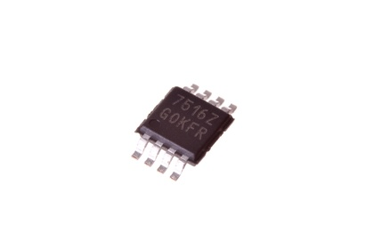

8 Pin SMD (MSOP) Adjustable Voltage Regulator 1 A - VS8A1

Summary
Name: 8 Pin SMD (MSOP) Adjustable Voltage Regulator 1 A
ID: VREG-MS08-X-ADJU-A1
Hex ID: VS8A1
WebPage: https://github.com/oomlout/oomlout-OOMP/wiki/VREG-MS08-X-ADJU-A1
Short URL: http://oom.lt/VS8A1
Revision History: https://github.com/oomlout/oomlout-OOMP/blob/master/parts/VREG-MS08-X-ADJU-A1/
| Type |
Size |
Color |
Description |
Index |
VREG
Voltage Regulator |
MS08
8 Pin SMD (MSOP) |
X
|
ADJU
Adjustable |
A1
1 A |
Images
About
This part is awaiting a description.
Specifications
| Info |
Value |
| Type |
Voltage Regulator |
| Size |
8 Pin SMD (MSOP) |
| Description |
Adjustable |
| Index |
1 A |
| Number of Pins |
8 |
Extra Details
Spotted a mistake, want to add more? Let us know oomp@oomlout.com
All images and resources are licensed [CC BY-SA] unless otherwise stated (ie. the datasheets)